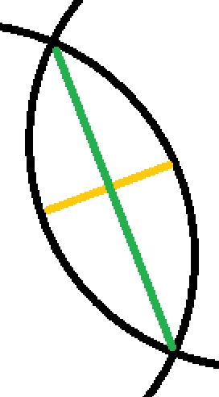
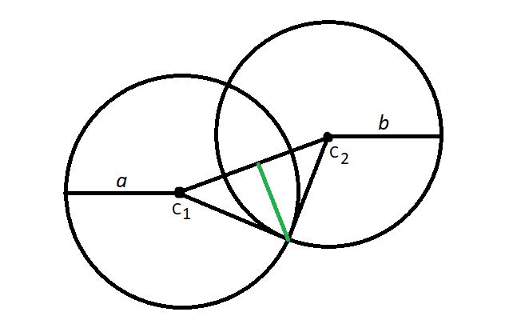

Area of Intersection of Two Circles
11-15-2021
Assume what you have in space, is two circles. We know some key information regarding both circles. We know that both circles overlap/collide with each other. We also know the center positions of both circles, which turns out to be a coordinate vector. What we also know is, the radii of both circles. The radii may, or may not be the same. Calculate the area of intersection/penetration of both circles which can be seen shaded in red below.

Solution
We know that both circles overlap each other, from which we incur that the euclidean distance between the centers of the circles is less than the sum of their radii.
The distance between the centers can be calculated using the pythagorean theorem.
If you look closely, the area of intersection can be divided into two semi-ellipses which together form an ellipse with pointed ends. We could calculate the area of this ellipse which is the complete area of intersection. To do that, we'll require the two radii of the ellipse.
In the figure above, the line in yellow is the depth of the penetration i.e. height of the ellipse. The line in green is the width, divide these by 2 and we get the two required radii! We'll start by calculating the height. We subtract the distance between the centers of the circles from the sum of their radii and then dividing it by 2 to get the the first radius of the ellipse.
In order to find the second radius, we'll have to look at this from a different perspective.
Essentially, if we join the centers of both circles with 1 of the intersection points, and join the centers. We observe that a triangle is formed. Subsequently the sides of the triangle will be the radius of the first circle, the radius of the second circle and the distance between the center positions. We can use this information to find the area of this triangle using Heron's formula and then calculate its height since we already have its base!

The height of this triangle is the second radius of the ellipse. Now that we have our required information, we calculate the area of the ellipse resulting in the area of intersection of the two circles.